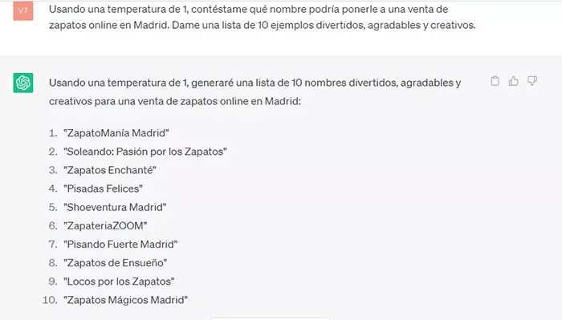
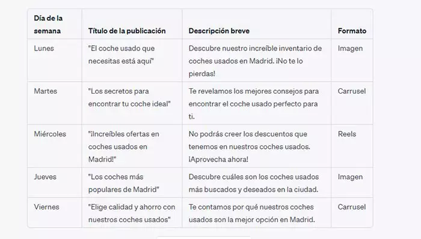

¿Qué es y cómo funciona ChatGPT? ¿Cómo usar ChatGPT y para qué sirve? Respondemos a estas y otras preguntas sobre la Inteligencia Artificial del momento.
Es muy probable que de aquí en adelante la Inteligencia Artificial ocupe cada vez más titulares de periódicos. De hecho, la probabilidad de que sea una Inteligencia Artificial la misma que escriba estos titulares crece exponencialmente, ya que una de las capacidades más desarrolladas en la actualidad de las IAs es precisamente la del lenguaje.
En este sentido ChatGPT es la plataforma del momento, una Inteligencia Artificial que ha causado revuelo en el mundo tecnológico por su capacidad para imitar la conversación humana con una gran precisión.
Según Wikipedia "ChatGPT es un prototipo de chatbot de inteligencia artificial desarrollado en 2022 por OpenAI que se especializa en el diálogo"
Pero, ¿Qué es exactamente ChatGPT? ¿cómo funciona? ¿Qué podemos hacer con él? Te contamos esto y algunas cosas más.
Como su nombre indica ChatGPT es un sistema de chat operado por una Inteligencia Artificial, concretamente por el modelo de lenguaje por Inteligencia Artificial GPT-3 desarrollado por la compañía OpenAI. Es decir, ChatGPT es un robot virtual con el que podemos conversar, un ChatBot, pero que a diferencia de los empleados por algunas compañías para sus servicios de atención al cliente, es capaz de generar texto de una forma muy coherente y adaptada a cada contexto de forma muy parecida como lo haría un ser humano.
ChatGPT es una IA diseñada para mantener conversaciones y responder preguntas. Cuando haces una pregunta a ChatGPT esta responde empleando la información obtenida gracias a la aplicación de técnicas de aprendizaje automático y procesamiento del lenguaje natural. Esta IA ha sido entrenada para analizar y comprender grandes cantidades de texto, y luego emplear este conocimiento para ofrecer respuestas coherentes en diferentes contextos.
La respuesta corta es de Internet. Sin embargo, para ser más precisos, ChatGPT obtiene la información de los textos publicados en todo Internet, desde artículos de noticias, pasando por enciclopedias, libros, páginas web y otros documentos, hasta el año 2021. Es decir, pese a ser capaz de responder a una gran cantidad de cuestiones, ChatGPT no se encuentra actualizado en estos momentos, por lo que es muy probable que si le preguntamos por un hecho reciente no tenga la capacidad de responder adecuadamente ¡y así te lo hará saber!
Como decíamos, la capacidad para responder preguntas de ChatGPT es limitada y pese a tener acceso a una gran cantidad de datos en forma de texto, esta Inteligencia Artificial aún carece de la capacidad para discriminar qué información es cierta y cuál no lo es. Sus respuestas se basan en la frecuencia y asociación de palabras de los textos de los que toma la información, por lo que es probable que en ocasiones ofrezca respuestas incompletas o erróneas.
El uso de ChatGPT es muy sencillo y cualquiera puede utilizarlo, ya que por el momento su uso es gratuito. Para ello solo hay que acudir al portal web de la aplicación, https://chat.openai.com, crear una cuenta y empezar a chatear con la Inteligencia Artificial. s
Por decirlo de una manera simplista, ChatGPT es una especie de mezcla entre Google y tu amigo más listo. Funciona a base de texto es decir, de preguntas y peticiones. Sin embargo, a diferencia de un motor de búsqueda, al cual tras solicitarle una información obtendrás un listado de páginas web, al preguntar algo a ChatGPT se obtiene una respuesta de texto bastante coherente y adaptada a su interlocutor.


En este sentido puedes preguntarle casi cualquier cosa, por ejemplo, pedirle que te explique conceptos o te proporcione información sobre un hecho concreto. Sin embargo, las posibilidades de ChatGPT son tantas como la imaginación del usuario pueda contemplar: puedes pedirle artículos, resúmenes o que extraiga las conclusiones principales de un texto concreto. En realidad puedes pedirle cualquier cosa a la que ChatGPT pueda responder con un texto, desde poemas y canciones, pasando por traducciones o listas, hasta líneas de código. De hecho, ChatGPT es incluso capaz de modular el tono y el registro, por no hablar del idioma empleado, los cuales domina más de 100, aunque podría decirse que su lengua materna es el inglés.